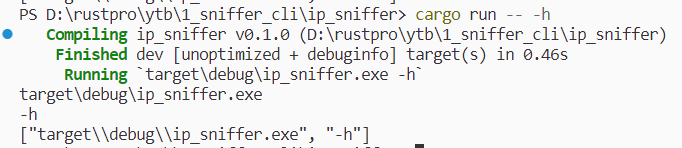
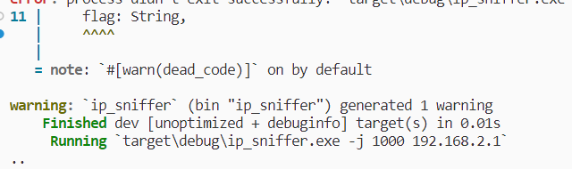
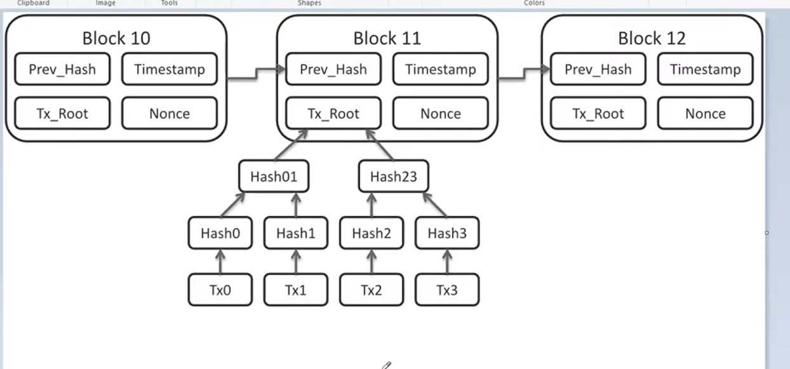
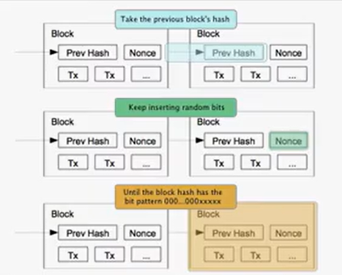

Port Sniffer CLI
init
cargo new ip_sniffer --bin
接收命令行参数
use std::env;
fn main() {
// 接收命令行参数
let args: Vec<String> = env::args().collect();
for i in &args {
println!("{}", i);
}
println!("{:?}", args);
}
测试
cargo run -- -h

编写ip扫描器
use std::env;
use std::io::{ self, Write };
use std::net::{ IpAddr, TcpStream };
use std::str::FromStr;
use std::process;
use std::sync::mpsc::{ Sender, channel };
use std::thread;
// 最大端口
const MAX: u16 = 65535;
struct Arguments {
flag: String,
ipaddr: IpAddr, // ip地址
threads: u16, // 线程数
}
impl Arguments {
fn new(args: &[String]) -> Result<Arguments, &'static str> {
if args.len() < 2 {
return Err("not enough arguments");
} else if args.len() > 4 {
return Err("too many arguments");
}
let f = args[1].clone();
if let Ok(ipaddr) = IpAddr::from_str(&f) {
return Ok(Arguments { flag: String::from(""), ipaddr, threads: 4 });
} else {
let flag = args[1].clone();
if flag.contains("-h") || flag.contains("-help") || args.len() == 2 {
println!(
"Usage: -j to select how many threads you want\r\n -h or -help to show this help message"
);
return Err("help");
} else if flag.contains("-h") || flag.contains("-help") {
return Err("too many arguments");
} else if flag.contains("-j") {
let ipaddr = match IpAddr::from_str(&args[3]) {
Ok(s) => s,
Err(_) => {
return Err("not a valid IpAddr;must be ipv4 or ipv6");
}
};
let threads = match args[2].parse::<u16>() {
Ok(s) => s,
Err(_) => {
return Err("failed to parse thread number");
}
};
return Ok(Arguments { threads, flag, ipaddr });
} else {
return Err("Invalid syntax");
}
}
}
}
// 扫描端口
fn scan(tx: Sender<u16>, start_port: u16, addr: IpAddr, num_threads: u16) {
let mut port: u16 = start_port + 1;
loop {
match TcpStream::connect((addr, port)) {
Ok(_) => {
print!(".");
io::stdout().flush().unwrap();
tx.send(port).unwrap();
}
Err(_) => {}
}
if MAX - port <= num_threads {
break;
}
port += num_threads;
}
}
fn main() {
// 接收命令行参数
let args: Vec<String> = env::args().collect();
let program = args[0].clone();
let arguments = Arguments::new(&args).unwrap_or_else(|err| {
if err.contains("help") {
process::exit(0);
} else {
eprintln!("{} problem parsing arguments: {}", program, err);
process::exit(0);
}
});
let num_threads = arguments.threads;
let addr = arguments.ipaddr;
let (tx, rx) = channel();
for i in 0..num_threads {
let tx = tx.clone();
thread::spawn(move || {
scan(tx, i, addr, num_threads);
});
}
let mut out = vec![];
drop(tx);
for p in rx {
out.push(p);
}
println!("");
out.sort();
for v in out {
println!("{} is open", v);
}
}
测试
cargo run -- -h
cargo run -- -j 1000 192.168.2.1

snake game
chat application(简易回声服务)
init
mkdir chat && cd chat
cargo new server --bin
cargo new client --bin
server
use std::io::{ErrorKind, Read, Write};
use std::net::TcpListener;
use std::sync::mpsc;
use std::thread;
const LOCAL: &str = "127.0.0.1:6000";
const MSG_SIZE: usize = 32;
fn sleep() {
thread::sleep(::std::time::Duration::from_millis(100));
}
fn main() {
// 绑定端口
let server = TcpListener::bind(LOCAL).expect("listener failed to bind");
// 非阻塞
server
.set_nonblocking(true)
.expect("failed to initialize non-blocking");
let mut clients = vec![];
// 通道
let (tx, rx) = mpsc::channel::<String>();
loop {
// 连接
if let Ok((mut socket, addr)) = server.accept() {
println!("Client {} connected", addr);
let tx = tx.clone();
clients.push(socket.try_clone().expect("failed to clone client"));
thread::spawn(move || {
loop {
let mut buff = vec![0; MSG_SIZE];
// 读取信息
match socket.read_exact(&mut buff) {
Ok(_) => {
let msg = buff.into_iter().take_while(|&x| x != 0).collect::<Vec<_>>();
let msg = String::from_utf8(msg).expect("Invalid utf8 message");
println!("{}: {:?}", addr, msg);
tx.send(msg).expect("failed to send message to rx");
}
Err(ref err) if err.kind() == ErrorKind::WouldBlock => (),
Err(_) => {
println!("closing connection with: {}", addr);
break;
}
}
}
sleep();
});
}
// 尝试通过通道接收信息
if let Ok(msg) = rx.try_recv() {
clients = clients
.into_iter()
.filter_map(|mut client| {
// 转换为字节
let mut buff = msg.clone().into_bytes();
// 调整缓冲区大小
buff.resize(MSG_SIZE, 0);
// 写入缓冲区
client.write_all(&buff).map(|_| client).ok()
})
// 缓冲区数据收集到向量
.collect::<Vec<_>>();
}
sleep();
}
}
client
use std::io::{self, ErrorKind, Read, Write};
use std::net::TcpStream;
use std::sync::mpsc::{self, channel, TryRecvError};
use std::thread;
use std::time::Duration;
const LOCAL: &str = "127.0.0.1:6000";
const MSG_SIZE: usize = 32;
fn main() {
let mut client = TcpStream::connect(LOCAL).expect("failed to connect");
client
.set_nonblocking(true)
.expect("failed to initialize non-blocking");
let (tx, rx) = mpsc::channel::<String>();
thread::spawn(move || loop {
let mut buff = vec![0; MSG_SIZE];
match client.read_exact(&mut buff) {
Ok(_) => {
let msg = buff.into_iter().take_while(|&x| x != 0).collect::<Vec<_>>();
println!("message recv {:?}", msg);
}
Err(ref err) if err.kind() == ErrorKind::WouldBlock => (),
Err(_) => {
println!("connection with server was servered");
break;
}
}
match rx.try_recv() {
Ok(msg) => {
let mut buff = msg.clone().into_bytes();
buff.resize(MSG_SIZE, 0);
client.write_all(&buff).expect("writing to socket failed");
println!("message sent {:?}", msg);
}
Err(TryRecvError::Empty) => (),
Err(TryRecvError::Disconnected) => break,
}
thread::sleep(Duration::from_millis(100));
});
println!("write a message");
loop {
let mut buff = String::new();
io::stdin()
.read_line(&mut buff)
.expect("reading from stdin failed");
let msg = buff.trim().to_string();
if msg == ":quit" || tx.send(msg).is_err() {
break;
}
}
println!("bye!");
}
CLI Toy Blockchain


cargo.toml
[package]
name = "bc"
version = "0.1.0"
edition = "2021"
# See more keys and their definitions at https://doc.rust-lang.org/cargo/reference/manifest.html
[dependencies]
chrono = "0.4"
serde = "1.0"
serde_derive = "1.0"
serde_json = "1.0"
sha2 = "0.10.1"
blockchain.rs
use serde_derive::{Deserialize, Serialize};
use sha2::{Digest, Sha256};
use std::fmt::Write;
use chrono::prelude::*;
#[derive(Debug, Clone, Serialize)]
struct Transaction {
sender: String,
receiver: String,
// 金额
amount: f32,
}
#[derive(Serialize, Debug)]
pub struct Blockheader {
timestamp: i64,
nonce: u32,
pre_hash: String,
merkle: String,
// 难度
difficulty: u32,
}
#[derive(Serialize, Debug)]
pub struct Block {
header: Blockheader,
count: u32,
transactions: Vec<Transaction>,
}
pub struct Chain {
chain: Vec<Block>,
curr_trans: Vec<Transaction>,
difficulty: u32,
miner_addr: String,
reward: f32, // 赏金
}
impl Chain {
pub fn new(miner_addr: String, difficulty: u32) -> Chain {
let mut chain = Chain {
chain: Vec::new(),
curr_trans: Vec::new(),
difficulty,
miner_addr,
reward: 100.0,
};
chain.generate_new_block();
chain
}
pub fn new_transaction(&mut self, sender: String, receiver: String, amount: f32) -> bool {
self.curr_trans.push(Transaction {
sender,
receiver,
amount,
});
true
}
pub fn last_hash(&self) -> String {
let block = match self.chain.last() {
Some(block) => block,
None => return String::from_utf8(vec![48; 64]).unwrap(),
};
Chain::hash(&block.header)
}
pub fn update_difficulty(&mut self, difficulty: u32) -> bool {
self.difficulty = difficulty;
true
}
pub fn update_reward(&mut self, reward: f32) -> bool {
self.reward = reward;
true
}
pub fn generate_new_block(&mut self) -> bool {
let header = Blockheader {
timestamp: Utc::now().timestamp_millis(),
nonce: 0,
pre_hash: self.last_hash(),
merkle: String::new(),
difficulty: self.difficulty,
};
let reward_trans = Transaction {
sender: String::from("Root"),
receiver: self.miner_addr.clone(),
amount: self.reward,
};
let mut block = Block {
header,
count: 0,
transactions: vec![],
};
block.transactions.push(reward_trans);
block.transactions.append(&mut self.curr_trans);
block.count = block.transactions.len() as u32;
block.header.merkle = Chain::get_merkle(block.transactions.clone());
Chain::proof_of_work(&mut block.header);
println!("{:#?}", &block);
self.chain.push(block);
true
}
fn get_merkle(curr_trans: Vec<Transaction>) -> String {
let mut merkle = Vec::new();
for t in &curr_trans {
let hash = Chain::hash(t);
merkle.push(hash);
}
if merkle.len() % 2 == 1 {
let last = merkle.last().cloned().unwrap();
merkle.push(last);
}
while merkle.len() > 1 {
let mut h1 = merkle.remove(0);
let mut h2 = merkle.remove(0);
h1.push_str(&mut h2);
let nh = Chain::hash(&h1);
merkle.push(nh);
}
merkle.pop().unwrap()
}
pub fn proof_of_work(header: &mut Blockheader) {
loop {
let hash = Chain::hash(header);
let slice = &hash[..header.difficulty as usize];
match slice.parse::<u32>() {
Ok(val) => {
if val != 0 {
header.nonce += 1;
} else {
println!("Block hash: {}", hash);
break;
}
}
Err(_) => {
header.nonce += 1;
continue;
}
};
}
}
pub fn hash<T: serde::Serialize>(item: &T) -> String {
let input = serde_json::to_string(&item).unwrap();
let mut hasher = Sha256::new();
hasher.update(input.as_bytes());
let res = hasher.finalize();
let vec_res = res.to_vec();
Chain::hex_to_string(vec_res.as_slice())
}
pub fn hex_to_string(vec_res: &[u8]) -> String {
let mut s = String::new();
for b in vec_res {
write!(&mut s, "{:x}", b).expect("unable to write");
}
s
}
}
main.rs
use std::io;
use std::io::Write;
use std::process;
mod blockchain;
fn main() {
let mut miner_addr = String::new();
let mut difficulty = String::new();
let mut choice = String::new();
print!("input a miner address: ");
io::stdout().flush();
io::stdin().read_line(&mut miner_addr);
print!("Difficulty: ");
io::stdout().flush();
io::stdin().read_line(&mut difficulty);
let diff = difficulty
.trim()
.parse::<u32>()
.expect("we need an integer");
println!("generating genesis block! ");
let mut chain = blockchain::Chain::new(miner_addr.trim().to_string(), diff);
loop {
println!("Menu");
println!("1) New Transaction");
println!("2) Mine block");
println!("3) Change Difficulty");
println!("4) Change Reward");
println!("0) Exit");
print!("Enter your choice: ");
io::stdout().flush();
choice.clear();
io::stdin().read_line(&mut choice);
println!("");
match choice.trim().parse().unwrap() {
0 => {
println!("exiting!");
process::exit(0);
}
1 => {
let mut sender = String::new();
let mut receiver = String::new();
let mut amount = String::new();
print!("enter sender address:");
io::stdout().flush();
io::stdin().read_line(&mut sender);
print!("enter receiver address: ");
io::stdout().flush();
io::stdin().read_line(&mut receiver);
print!("Enter amount: ");
io::stdout().flush();
io::stdin().read_line(&mut amount);
let res = chain.new_transaction(
sender.trim().to_string(),
receiver.trim().to_string(),
amount.trim().parse().unwrap(),
);
match res {
true => println!("transaction added"),
false => println!("transaction failed"),
}
}
2 => {
println!("Generating block");
let res = chain.generate_new_block();
match res {
true => println!("Block generated successfully"),
false => println!("Block generation failed"),
}
}
3 => {
let mut new_diff = String::new();
print!("enter new difficulty: ");
io::stdout().flush();
io::stdin().read_line(&mut new_diff);
let res = chain.update_difficulty(new_diff.trim().parse().unwrap());
match res {
true => println!("Updated Difficulty"),
false => println!("Failed Update Difficulty"),
}
}
4 => {
let mut new_reward = String::new();
print!("Enter new reward: ");
io::stdout().flush();
io::stdin().read_line(&mut new_reward);
let res = chain.update_reward(new_reward.trim().parse().unwrap());
match res {
true => println!("Updated reward"),
false => println!("Failed Update reward"),
}
}
_ => println!("Invalid option please retry"),
}
}
}